ME
Hallo, mijn naam is Maurice Waelen (20), ik studeer ICT & Media Design aan de Fontys Hogeschool ICT te Eindhoven.
Mijn doel is om mijzelf te ontwikkelen tot 'all round digital content creator'. Van fotografie, videografie, editten tot het bouwen van front/back-ends voor applicaties en alles daartussenin.
Naast deze studie ben ik ook veel bezig met "StinStin Multimedia" een eigen bedrijfje binnen mijn vriendengroep.
Stinstin Multimedia Design is gevestigd in Haelen en biedt verschillende producten aan op het gebied van webdesign, grafische vormgeving, film en fotografie. Wij kunnen daarmee een complete multimedia oplossing voor bedrijven/ particulieren bieden.
Ook hebben wij een professionele kortfilm genaamd 2Fast4U gemaakt. Waar ik ook een scene in meespeel. Deze kortfilm is ook geselecteerd voor het "amateur" filmfestival in Cannes (Frankrijk).
SELFIE
WEEK